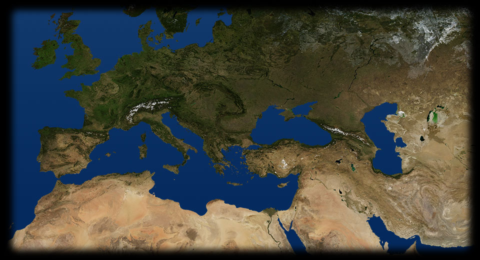
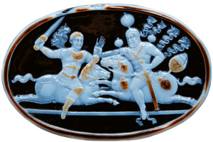
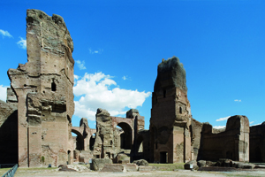

- 315 610
- 240 320
- 
EDESSA
Questo cammeo in sardonica del III secolo d.C. raffigura la vittoria del re sasanide Sapore I sull’imperatore Valeriano, che viene fatto prigioniero: una vera e propria disfatta, anche morale, per l’Impero romano. - 
TERME DI CARACALLA
Le imponenti rovine delle terme di Caracalla, costruite tra il 212 e il 217 d.C. hanno restituito, a partire dal Rinascimento, moltissime opere d’arte, ancora oggi visibili in vari musei. L’edificio è uno dei più grandi complessi termali giunti fino a noi: raggiungeva infatti i 400 metri di larghezza.ROMA
Può sorprendere il numero di imperatori uccisi - spesso dai loro stessi pretoriani - anche prima degli anni della cosiddetta “anarchia militare”. Macrino (217-218 d.C.), Elagabalo (218-222 d.C.), Severo Alessandro (222-235 d.C.), ad esempio, morirono tutti di morte violenta per rivolte e congiure.